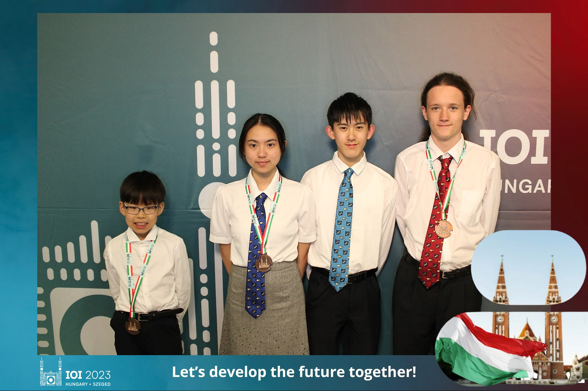

NZOI is organised by a group of people who are keen to share their enjoyment of informatics with New Zealand students. This group includes teachers, professional programmers, and university students. Many in the group have been through the NZOI training programme and competed in an International Olympiad in Informatics.
The group runs a programming contest which has several events throughout the year. It also holds a training camp in January each year to which the top programming students are invited.
The group relies heavily on sponsorship from tertiary organisations and business. The sponsorship subsidises the society’s activities including the supervising adults who are required to accompany the students selected to compete in the international olympiad event.
The society provides training opportunities in Informatics to selected New Zealand students who are currently enrolled in a New Zealand secondary school or who have been enrolled in the last eight months. The society selects, from those it has trained, students to attend the International Olympiad in Informatics. The society endeavours to foster informatics in New Zealand secondary schools. The society aims to be a non-profit group with all funds going to fulfill the purposes above.
The 2023 New Zealand team kept scoreboard watchers entertained for 5 hours on the second competition night, as they took turns getting marks that pushed them into bronze medal contention, and then falling back as they were leap frogged by other contestants. It was the most exciting and nail-biting viewing since NZ first competed (back in 2006!). There were 21 places between our entire team (out of over 350 contestants), with Anatol Coen, GuanHan Li and Phoebe Yifei Zhang gaining bronze medals and Jonathon Sun gaining an Honorable Mention. We are enormously proud of the entire team and we believe we made history with the youngest contestant to win a medal. The team was led by Suzanne Scott and Zalan Varga.
